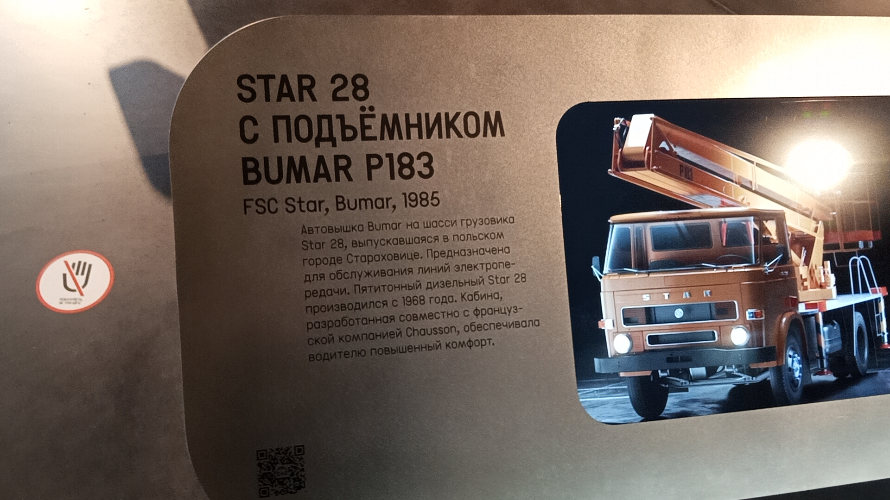

STAR 28 с подъёмником Bumar P183
Автовышка Bumar на шасси грузовика Star 28, выпускавшаяся в польском городе Староховице. Предназначена для обслуживания линий электропередачи.
Пятитонный дизельный Star 28 производился с 1968 года. Кабина, разработанная совместно с французской компанией Chausson, обеспечивала водителю повышенный комфорт.
Основные данные
| Модель | STAR 28 с подъёмником Bumar P183 |
| Производитель | FSC Star (Староховице, Польша), Bumar (Польша) |
| Год выпуска экспоната | 1985 |
| Шасси | Грузовик Star 28 (производился с 1968 года) |
| Двигатель | Пятитонный дизельный |
| Назначение | Обслуживание линий электропередачи |
| Особенности | Кабина совместной разработки с фирмой Chausson (Франция) |
| Текущее состояние | Не эксплуатируется (музейный экспонат) |
История
Начало выпуска шасси
В Польше стартовало производство грузовика Star 28 грузоподъёмностью 5 тонн. Модель стала одной из самых массовых и надёжных машин своего времени.
Выпуск экспоната
На шасси Star 28 была установлена автовышка Bumar P183. Этот экземпляр использовался для обслуживания линий электропередачи в городских условиях.
В экспозиции музея
Сегодня эта уникальная автовышка представлена в Музее Транспорта Москвы. Она напоминает о важной работе коммунальных служб, обеспечивающих город электричеством.
Интересные факты
Французский комфорт: Кабина грузовика Star 28 была разработана совместно с французской компанией Chausson. Для своего времени она обеспечивала водителю небывалый уровень комфорта и эргономики, что особенно важно при длительной работе на спецтехнике.
Фотогалерея

Оранжевая автовышка на шасси польского грузовика.

Описание модели и её характеристики.
Нажмите на фото для увеличения
«Автовышка Bumar на шасси грузовика Star 28, выпускавшаяся в польском городе Староховице. Предназначена для обслуживания линий электропередачи».